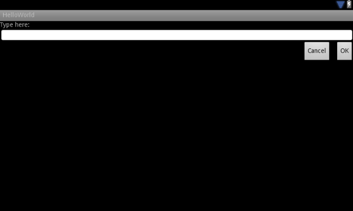

This lesson teaches you to
- Use "wrap_content" and "match_parent"
- Use RelativeLayout
- Use Size Qualifiers
- Use the Smallest-width Qualifier
- Use Layout Aliases
- Use Orientation Qualifiers
- Use Nine-patch Bitmaps
You should also read
Try it out
NewsReader.zip
This lesson shows you how to support different screen sizes by:
- Ensuring your layout can be adequately resized to fit the screen
- Providing appropriate UI layout according to screen configuration
- Ensuring the correct layout is applied to the correct screen
- Providing bitmaps that scale correctly
Use "wrap_content" and "match_parent"
To ensure that your layout is flexible and adapts to different screen sizes,
you should use "wrap_content" and "match_parent" for the width
and height of some view components. If you use "wrap_content", the width
or height of the view is set to the minimum size necessary to fit the content
within that view, while "match_parent" (also known as
"fill_parent" before API level 8) makes the component expand to match the size of its
parent view.
By using the "wrap_content" and "match_parent" size values instead of
hard-coded sizes, your views either use only the space required for that
view or expand to fill the available space, respectively. For example:
<LinearLayout xmlns:android="http://schemas.android.com/apk/res/android"
android:orientation="vertical"
android:layout_width="match_parent"
android:layout_height="match_parent">
<LinearLayout android:layout_width="match_parent"
android:id="@+id/linearLayout1"
android:gravity="center"
android:layout_height="50dp">
<ImageView android:id="@+id/imageView1"
android:layout_height="wrap_content"
android:layout_width="wrap_content"
android:src="@drawable/logo"
android:paddingRight="30dp"
android:layout_gravity="left"
android:layout_weight="0" />
<View android:layout_height="wrap_content"
android:id="@+id/view1"
android:layout_width="wrap_content"
android:layout_weight="1" />
<Button android:id="@+id/categorybutton"
android:background="@drawable/button_bg"
android:layout_height="match_parent"
android:layout_weight="0"
android:layout_width="120dp"
style="@style/CategoryButtonStyle"/>
</LinearLayout>
<fragment android:id="@+id/headlines"
android:layout_height="fill_parent"
android:name="com.example.android.newsreader.HeadlinesFragment"
android:layout_width="match_parent" />
</LinearLayout>
Notice how the sample uses "wrap_content" and "match_parent"
for component sizes rather than specific dimensions. This allows the layout
to adapt correctly to different screen sizes and orientations.
For example, this is what this layout looks like in portrait and landscape mode. Notice that the sizes of the components adapt automatically to the width and height:

Figure 1. The News Reader sample app in portrait (left) and landscape (right).
Use RelativeLayout
You can construct fairly complex layouts using nested instances of LinearLayout and
combinations of "wrap_content" and "match_parent" sizes.
However, LinearLayout does not allow you to precisely control the
spacial relationships of child views; views in a LinearLayout simply line up
side-by-side. If you need child views to be oriented in variations other than a straight line, a
better solution is often to use a RelativeLayout, which allows
you to specify your layout in terms of the spacial relationships between
components. For instance, you can align one child view on the left side and another view on
the right side of the screen.
For example:
<?xml version="1.0" encoding="utf-8"?>
<RelativeLayout xmlns:android="http://schemas.android.com/apk/res/android"
android:layout_width="match_parent"
android:layout_height="match_parent">
<TextView
android:id="@+id/label"
android:layout_width="match_parent"
android:layout_height="wrap_content"
android:text="Type here:"/>
<EditText
android:id="@+id/entry"
android:layout_width="match_parent"
android:layout_height="wrap_content"
android:layout_below="@id/label"/>
<Button
android:id="@+id/ok"
android:layout_width="wrap_content"
android:layout_height="wrap_content"
android:layout_below="@id/entry"
android:layout_alignParentRight="true"
android:layout_marginLeft="10dp"
android:text="OK" />
<Button
android:layout_width="wrap_content"
android:layout_height="wrap_content"
android:layout_toLeftOf="@id/ok"
android:layout_alignTop="@id/ok"
android:text="Cancel" />
</RelativeLayout>
Figure 2 shows how this layout appears on a QVGA screen.
Figure 2. Screenshot on a QVGA screen (small screen).
Figure 3 shows how it appears on a larger screen.
Figure 3. Screenshot on a WSVGA screen (large screen).
Notice that although the size of the components changed, their
spatial relationships are preserved as specified by the RelativeLayout.LayoutParams.
Use Size Qualifiers
There's only so much mileage you can get from a flexible layout or relative layout like the one in the previous sections. While those layouts adapt to different screens by stretching the space within and around components, they may not provide the best user experience for each screen size. Therefore, your application should not only implement flexible layouts, but should also provide several alternative layouts to target different screen configurations. You do so by using configuration qualifiers, which allows the runtime to automatically select the appropriate resource based on the current device’s configuration (such as a different layout design for different screen sizes).
For example, many applications implement the "two pane" pattern for large screens (the app might show a list of items on one pane and the content on another pane). Tablets and TVs are large enough for both panes to fit simultaneously on screen, but phone screens have to show them separately. So, to implement these layouts, you could have the following files:
res/layout/main.xml, single-pane (default) layout:<LinearLayout xmlns:android="http://schemas.android.com/apk/res/android" android:orientation="vertical" android:layout_width="match_parent" android:layout_height="match_parent"> <fragment android:id="@+id/headlines" android:layout_height="fill_parent" android:name="com.example.android.newsreader.HeadlinesFragment" android:layout_width="match_parent" /> </LinearLayout>res/layout-large/main.xml, two-pane layout:<LinearLayout xmlns:android="http://schemas.android.com/apk/res/android" android:layout_width="fill_parent" android:layout_height="fill_parent" android:orientation="horizontal"> <fragment android:id="@+id/headlines" android:layout_height="fill_parent" android:name="com.example.android.newsreader.HeadlinesFragment" android:layout_width="400dp" android:layout_marginRight="10dp"/> <fragment android:id="@+id/article" android:layout_height="fill_parent" android:name="com.example.android.newsreader.ArticleFragment" android:layout_width="fill_parent" /> </LinearLayout>
Notice the large qualifier in the directory name of the second layout. This layout
will be selected on devices with screens classified as large (for example, 7" tablets and above). The
other layout (without qualifiers) will be selected for smaller devices.
Use the Smallest-width Qualifier
One of the difficulties developers had in pre-3.2 Android devices was the "large" screen size bin, which encompasses the Dell Streak, the original Galaxy Tab, and 7" tablets in general. However, many applications may want to show different layouts for different devices in this category (such as for 5" and 7" devices), even though they are all considered to be "large" screens. That's why Android introduced the "Smallest-width" qualifier (amongst others) in Android 3.2.
The Smallest-width qualifier allows you to target screens that have a certain minimum
width given in dp. For example, the typical 7" tablet has a minimum width of
600 dp, so if you want your UI to have two panes on those screens (but a single
list on smaller screens), you can use the same two layouts from the previous section for single
and two-pane layouts, but instead of the large size qualifier, use
sw600dp to indicate the two-pane layout is for screens on which the smallest-width
is 600 dp:
res/layout/main.xml, single-pane (default) layout:<LinearLayout xmlns:android="http://schemas.android.com/apk/res/android" android:orientation="vertical" android:layout_width="match_parent" android:layout_height="match_parent"> <fragment android:id="@+id/headlines" android:layout_height="fill_parent" android:name="com.example.android.newsreader.HeadlinesFragment" android:layout_width="match_parent" /> </LinearLayout>res/layout-sw600dp/main.xml, two-pane layout:<LinearLayout xmlns:android="http://schemas.android.com/apk/res/android" android:layout_width="fill_parent" android:layout_height="fill_parent" android:orientation="horizontal"> <fragment android:id="@+id/headlines" android:layout_height="fill_parent" android:name="com.example.android.newsreader.HeadlinesFragment" android:layout_width="400dp" android:layout_marginRight="10dp"/> <fragment android:id="@+id/article" android:layout_height="fill_parent" android:name="com.example.android.newsreader.ArticleFragment" android:layout_width="fill_parent" /> </LinearLayout>
This means that devices whose smallest width is greater than or equal to
600dp will select the layout-sw600dp/main.xml (two-pane) layout,
while smaller screens will select the layout/main.xml (single-pane)
layout.
However, this won't work well on pre-3.2 devices, because they don't
recognize sw600dp as a size qualifier, so you still have to use the large
qualifier as well. So, you should have a file named
res/layout-large/main.xml
which is identical to res/layout-sw600dp/main.xml. In the next section
you'll see a technique that allows you to avoid duplicating the layout files this way.
Use Layout Aliases
The smallest-width qualifier is available only on Android 3.2 and above. Therefore, you should also still use the abstract size bins (small, normal, large and xlarge) to be compatible with earlier versions. For example, if you want to design your UI so that it shows a single-pane UI on phones but a multi-pane UI on 7" tablets, TVs and other large devices, you'd have to supply these files:
res/layout/main.xml:single-pane layoutres/layout-large:multi-pane layoutres/layout-sw600dp:multi-pane layout
The last two files are identical, because one of them will be matched by Android 3.2 devices, and the other one is for the benefit of tablets and TVs with earlier versions of Android.
To avoid this duplication of the same file for tablets and TVs (and the maintenance headache resulting from it), you can use alias files. For example, you can define the following layouts:
res/layout/main.xml, single-pane layoutres/layout/main_twopanes.xml, two-pane layout
And add these two files:
res/values-large/layout.xml:<resources> <item name="main" type="layout">@layout/main_twopanes</item> </resources>res/values-sw600dp/layout.xml:<resources> <item name="main" type="layout">@layout/main_twopanes</item> </resources>
These latter two files have identical content, but they don’t actually define
the layout. They merely set up main to be an alias to main_twopanes. Since
these files have large and sw600dp selectors, they are
applied to tablets and TVs regardless of Android version (pre-3.2 tablets and TVs match
large, and post-3.2 will match sw600dp).
Use Orientation Qualifiers
Some layouts work well in both landscape and portrait orientations, but most of them can benefit from adjustments. In the News Reader sample app, here is how the layout behaves in each screen size and orientation:
- small screen, portrait: single pane, with logo
- small screen, landscape: single pane, with logo
- 7" tablet, portrait: single pane, with action bar
- 7" tablet, landscape: dual pane, wide, with action bar
- 10" tablet, portrait: dual pane, narrow, with action bar
- 10" tablet, landscape: dual pane, wide, with action bar
- TV, landscape: dual pane, wide, with action bar
So each of these layouts is defined in an XML file in the
res/layout/ directory. To then assign each layout to the various screen
configurations, the app uses layout aliases to match them to
each configuration:
res/layout/onepane.xml:
<LinearLayout xmlns:android="http://schemas.android.com/apk/res/android"
android:orientation="vertical"
android:layout_width="match_parent"
android:layout_height="match_parent">
<fragment android:id="@+id/headlines"
android:layout_height="fill_parent"
android:name="com.example.android.newsreader.HeadlinesFragment"
android:layout_width="match_parent" />
</LinearLayout>
res/layout/onepane_with_bar.xml:
<LinearLayout xmlns:android="http://schemas.android.com/apk/res/android"
android:orientation="vertical"
android:layout_width="match_parent"
android:layout_height="match_parent">
<LinearLayout android:layout_width="match_parent"
android:id="@+id/linearLayout1"
android:gravity="center"
android:layout_height="50dp">
<ImageView android:id="@+id/imageView1"
android:layout_height="wrap_content"
android:layout_width="wrap_content"
android:src="@drawable/logo"
android:paddingRight="30dp"
android:layout_gravity="left"
android:layout_weight="0" />
<View android:layout_height="wrap_content"
android:id="@+id/view1"
android:layout_width="wrap_content"
android:layout_weight="1" />
<Button android:id="@+id/categorybutton"
android:background="@drawable/button_bg"
android:layout_height="match_parent"
android:layout_weight="0"
android:layout_width="120dp"
style="@style/CategoryButtonStyle"/>
</LinearLayout>
<fragment android:id="@+id/headlines"
android:layout_height="fill_parent"
android:name="com.example.android.newsreader.HeadlinesFragment"
android:layout_width="match_parent" />
</LinearLayout>
res/layout/twopanes.xml:
<LinearLayout xmlns:android="http://schemas.android.com/apk/res/android"
android:layout_width="fill_parent"
android:layout_height="fill_parent"
android:orientation="horizontal">
<fragment android:id="@+id/headlines"
android:layout_height="fill_parent"
android:name="com.example.android.newsreader.HeadlinesFragment"
android:layout_width="400dp"
android:layout_marginRight="10dp"/>
<fragment android:id="@+id/article"
android:layout_height="fill_parent"
android:name="com.example.android.newsreader.ArticleFragment"
android:layout_width="fill_parent" />
</LinearLayout>
res/layout/twopanes_narrow.xml:
<LinearLayout xmlns:android="http://schemas.android.com/apk/res/android"
android:layout_width="fill_parent"
android:layout_height="fill_parent"
android:orientation="horizontal">
<fragment android:id="@+id/headlines"
android:layout_height="fill_parent"
android:name="com.example.android.newsreader.HeadlinesFragment"
android:layout_width="200dp"
android:layout_marginRight="10dp"/>
<fragment android:id="@+id/article"
android:layout_height="fill_parent"
android:name="com.example.android.newsreader.ArticleFragment"
android:layout_width="fill_parent" />
</LinearLayout>
Now that all possible layouts are defined, it's just a matter of mapping the correct layout to each configuration using the configuration qualifiers. You can now do it using the layout alias technique:
res/values/layouts.xml:
<resources>
<item name="main_layout" type="layout">@layout/onepane_with_bar</item>
<bool name="has_two_panes">false</bool>
</resources>
res/values-sw600dp-land/layouts.xml:
<resources>
<item name="main_layout" type="layout">@layout/twopanes</item>
<bool name="has_two_panes">true</bool>
</resources>
res/values-sw600dp-port/layouts.xml:
<resources>
<item name="main_layout" type="layout">@layout/onepane</item>
<bool name="has_two_panes">false</bool>
</resources>
res/values-large-land/layouts.xml:
<resources>
<item name="main_layout" type="layout">@layout/twopanes</item>
<bool name="has_two_panes">true</bool>
</resources>
res/values-large-port/layouts.xml:
<resources>
<item name="main_layout" type="layout">@layout/twopanes_narrow</item>
<bool name="has_two_panes">true</bool>
</resources>
Use Nine-patch Bitmaps
Supporting different screen sizes usually means that your image resources must also be capable of adapting to different sizes. For example, a button background must fit whichever button shape it is applied to.
If you use simple images on components that can change size, you will quickly notice that the results are somewhat less than impressive, since the runtime will stretch or shrink your images uniformly. The solution is using nine-patch bitmaps, which are specially formatted PNG files that indicate which areas can and cannot be stretched.
Therefore, when designing bitmaps that will be used on components with variable size, always use nine-patches. To convert a bitmap into a nine-patch, you can start with a regular image (figure 4, shown with in 4x zoom for clarity).

Figure 4. button.png
And then run it through the draw9patch utility of the
SDK (which is located in the tools/ directory), in which you can mark the areas that
should be stretched by drawing pixels along the left and top borders. You can also mark the area
that should hold the content by drawing pixels along the right and bottom borders, resulting in
figure 5.

Figure 5. button.9.png
Notice the black pixels along the borders. The ones on the top and left borders indicate the places where the image can be stretched, and the ones on the right and bottom borders indicate where the content should be placed.
Also, notice the .9.png extension. You must use this
extension, since this is how the framework detects that this is a nine-patch
image, as opposed to a regular PNG image.
When you apply this background to a component (by setting
android:background="@drawable/button"), the framework stretches
the image correctly to accommodate the size of the button, as shown in various sizes in figure
6.

Figure 6. A button using the button.9.png
nine-patch in various sizes.